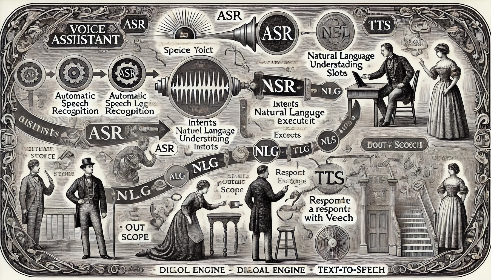

語音助理的基本組成

在這邊需要介紹一些專有名詞。一套語音助理系統的組成，通常會包括—ASR、NLU、NLG、TTS 等，在一個完整的語音互動中，扮演各自的角色。
- ASR：Automatic Speech Recognition，自動語音識別，又稱為 STR （Speech-to-Text），負責將語音訊號轉換為文字。對於行動開發者來說，應該清楚蘋果提供了 Sppech 框架，在 Android 系統中也有 SpeechRecognizer 可用，在瀏覽器中也一樣有 SpeechRecognition。除此之外，許多雲端服務，像是 Google Cloud 與 Azure，也具備將上傳的語音資料轉換成文字的服務。
- NLU：Natural Language Understanding，自然語言理解，負責從文字中抽取出意圖，像是知道使用者想要做什麼事情，想要問什麼問題，也可以分析使用者所說的話當中的情緒（悲傷、高興、憤怒），或是口吻是正式還是輕鬆等。在行動開發的框架中，通常沒有這部份的框架，但是所有的交談型 LLM 都一定包含 NLU 的能力。此外，比較有名的 NLU 引擎包括 Google Dialogflow、Microsoft LUIS、IBM Watson、Nuance Recognizer 等等。
- NLG：Natural Language Generation，自然語言生成，負責產生對特定文字的回覆。其實各種 LLM，就是在擔任 NLG 引擎的工作。
- TTS：Text-to-Speech。負責將文字轉換為語音。在行動開發者的框架中，蘋果提供了 AVSpeechSynthesizer、Google 提供了 TextToSpeech。在瀏覽器中，也有 SpeechSynthesis 可用。雲端服務中，像是 Google Cloud 與 Azure 也提供了將文字轉換成語音的服務。
各種組件的分工
在執行一段語音助理的工作流程中，各個組件的分工如下：
在上圖中，多了一個叫做「對話引擎」的角色，也就是我們需要自行開發的部分。對話引擎需要負責管理一份對應表格（mapping），將各種從 NLU 引擎抽取出的意圖，對應到我們的語音助手可以執行的工作上。如果不能處理這項工作（像使用者只說了「你好」，但是我們沒辦法用「你好」這句話決定可以做什麼事），我們可以有幾個選擇，或是就直接用 TTS 告訴使用者我們不理解你的意圖，或是就由 NLU 引擎產生一個回答，這樣會讓使用者感到比較親切。
至於是可以執行的工作，就會走入一套我們設計好的對話流程。我們在後面再詳細討論。
狀態
從以上的流程圖中，我們也可以發現，對話引擎擁有以下幾種狀態：
- 閒置狀態：也是語音助理的初始狀態。
- 聆聽/辨識狀態：使用者從 App 啟動了麥克風，對系統輸入語音資料，同時 ASR 引擎也在嘗試辨識語音。通常等到使用者停止講話一陣子，我們架設使用者已經把想講的話說完，我們就會進入下一個狀態。而如果在一段時間內，使用者什麼話都沒說，或是沒有任何 ASR 辨識結果，我們也會離開這個狀態，回到閒置狀態，我們也可能用 TTS 提示使用者「我不能理解你的意思」。
- 處理狀態：我們將 ASR 辨識結果送到 NLU 引擎後，NLU 引擎往往需要一段時間分析，我們也往往需要獲得一些其他的資訊，才知道對話應該如何繼續進行。這段時間，我們通常會在 App 上顯示一個等待的畫面，或是用 TTS 提示使用者「我正在處理你的要求」。
- TTS 播報狀態：當我們用 TTS 回應使用者時，我們會進入這個狀態。這個狀態通常會持續一段時間，直到 TTS 播報完畢，我們才會回到閒置狀態。或是，如果我們需要繼續追問使用者，我們會回到聆聽/辨識狀態。
這些狀態還可以繼續細分，像是前面提到，處理階段中，也可以繼續拆成 NLU 處理中，或是在獲取額外資訊等階段。而 App 應該要監聽這些狀態，並且在不同的狀態下，顯示不同的畫面，或是提供不同的操作，以符合使用者的預期。
@immutable
abstract class DialogEngineState {}
/// Idling state
class DialogEngineIdling extends DialogEngineState {}
/// Listening state
class DialogEngineListening extends DialogEngineState {
final String asrResult;
DialogEngineListening({required this.asrResult});
}
/// Processing state
class DialogEngineCompleteListening extends DialogEngineState {
final String asrResult;
DialogEngineCompleteListening({required this.asrResult});
}
/// TTS playing state
class DialogEnginePlayingTts extends DialogEngineState {
final String prompt;
DialogEnginePlayingTts({required this.prompt});
}
介面設計
我們可以使用的各種 ASR、NLU、NLG、TTS 的服務非常多，除了各種已有的選擇之外，我們甚至可能會開發自己的服務，像是在我們自己的伺服器上放置我們自己調整過的模型。從開發對話引擎的角度來看，我們便應該專注於介面，而非個別服務的實作，我們只需要知道 ASR、NLU…每個引擎所具備的能力，之後可以隨時抽換實作。我們的對話引擎大概會像這樣：
- 有 ASR、NLU、NLG、TTS 四個引擎的實例
- 有可以讓外部監聽的狀態
- 有可以讓外部設定的對話流程
class DialogEngine implements VuiFlowDelegate {
final AsrEngine asrEngine;
final TtsEngine ttsEngine;
final NluEngine nluEngine;
final NlgEngine nlgEngine;
final StreamController<DialogEngineState> _stateStream = StreamController();
DialogEngineState _state = DialogEngineIdling();
DialogEngineState get state => _state;
Stream<DialogEngineState> get stateStream => _stateStream.stream;
Map<String, VuiFlow> _vuiFlowMap = {};
}
ASR
我們定義的 ASR 引擎像這樣：
enum AsrEngineState {
listening,
notListening,
done,
}
abstract class AsrEngine {
Future<bool> init();
Future<bool> startRecognition();
Future<bool> stopRecognition();
Future<void> setLanguage(String language);
Function(String, bool)? onResult;
Function(AsrEngineState)? onStatusChange;
Function(dynamic)? onError;
bool get isInitialized;
}
在 ASR 引擎的介面上，最主要的 method 就是初始化、開始辨識、停止辨識，以及設定語言。我們也提供了一些 callback，讓外部可以監聽 ASR 引擎的狀態。因為在開啟 ASR 引擎之前，可能需要做一些權限相關的設定，因此設計了一個初始化的 method，而在啟動 ASR 引擎之後，對話引擎就會進入 Listening 狀態，這時候就會開始接收語音輸入，透過 onResult 接收目前辨識出的文字。當使用者停止講話，或是 ASR 引擎辨識出一段語音，我們就會進入 Done 狀態，這時候就可以將辨識結果送到 NLU 引擎。
NLU
class NluIntent {
final String intent;
final Map slots;
NluIntent({
required this.intent,
required this.slots,
});
factory NluIntent.fromMap(Map json) {
return NluIntent(
intent: json['intent'] ?? '',
slots: json['slots'] ?? [],
);
}
}
abstract class NluEngine {
Set<String> availableIntents = <String>{};
Set<String> availableSlots = <String>{};
Future<NluIntent> extractIntent(
String utterance, {
String? currentIntent,
String? additionalRequirement,
});
}
如前所述，NLU 引擎的角色就是從文字抽取出意圖。所以我們在這邊定義了 NluIntent 物件，在這個物件中，包含被抽取出的意圖的代號，以及與這個意圖相關的 Slot—所謂的 Slot 就是意圖中的參數。例如「導航到動物園」這句話中，「導航」是使用者想要執行的意圖，而「動物園」就是這個意圖的 Slot。
在 NluEngine 介面中，我們定義了一個 method extractIntent，這個 method 會接收一段文字，並且回傳一個 NluIntent 物件。在這個 method 中，我們也可以設定一些參數，像是目前的意圖、或是一些額外的需求，讓 NLU 引擎可以更好地抽取出意圖。像是，我們告訴 NLU 引擎我們想要哪些 NLU 意圖以及 Slot，就可以幫助他盡可能歸類到我們限制的分類中。
NLG
abstract class NlgEngine {
Future<String?> generateResponse(
String utterance, {
bool useDefaultPrompt = true,
bool? preventMeaningLessMessage,
});
}
NLG 的介面非常簡單，基本上就是將一段文字交給 NLG 引擎，並且回傳一段回應。在這個 method 中，我們也可以設定一些參數，像是是否使用預設的提示，或是是否要避免回傳無意義的訊息。
TTS
TTS 引擎所需要的介面，就是播放某個句子以及與停止播放。此外，我們通常需要能夠設定 TTS 引擎的語言、語速、音量、音高，以及聲音（男聲、女聲等）。我們另外設計了一些 callback，讓外部可以監聽 TTS 引擎的狀態。
import 'dart:async';
abstract class TtsEngine {
Future<void> playPrompt(String prompt);
Future<void> stopPlaying();
Future<void> setLanguage(String language);
Future<void> setSpeechRate(double rate);
Future<void> setVolume(double volume);
Future<void> setPitch(double pitch);
Future<void> setVoice(Map<String, String> voice);
Function()? onStart;
Function()? onComplete;
Function(String text, int startOffset, int endOffset, String word)?
onProgress;
Function(String msg)? onError;
Function()? onCancel;
Function()? onPause;
Function()? onContinue;
}